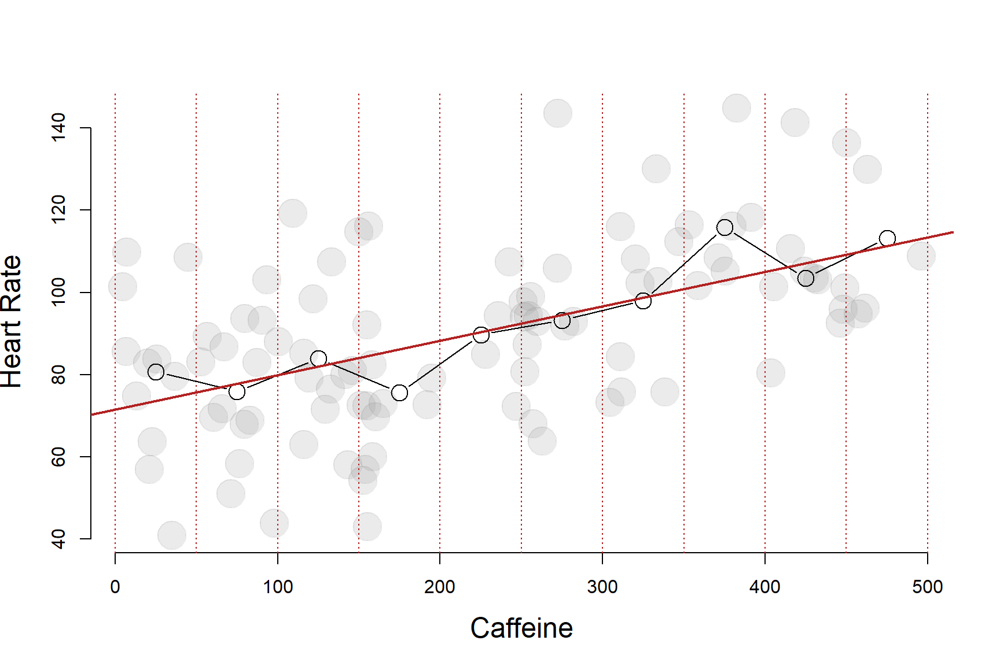
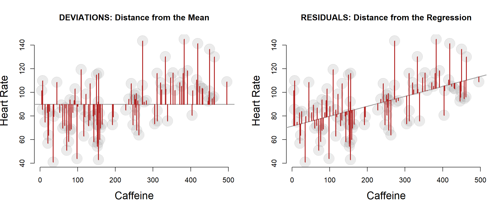

Building a Regression Model
1 Effect of Caffeine on Heart Rate
We are interested in understanding the effect that caffeine has on heart rate. We have designed a study with 100 participants and randomly assigned dosages of caffeine between 0 and 500 mg. We are now trying to determine whether caffeine raises heart rate significantly.
The relationship looks as follows:

1.1 DIY Regression
It looks as though heart rate does increase with the level of caffeine administered. But by how much?
One simplistic way we can analyze the data is by splitting it into several ranges of treatment and calculating the average heart rate for each group:

Or alternatively, we could look at box and whisker plot of each group.

1.2 The Conditional Mean
Either way, what we are doing here is basically a mathematically imprecise do-it-yourself regression model. Although this is a fairly blunt way to analyze the data, it is actually not too far off from our more mathematically elegant regression line:

This does demonstrate an important point, however. The regression model is a conditional mean: it gives you the average heart rate of a subject conditional on how much caffeine they consumed.
In other words, if you tell me the caffeine intake of the subject, I can give you a good guess of their heart rate.
The regression line represents the average value of Y conditional on each level of X.
In other words, a regression is just a fancy average.
| ave.caffeine | ave.heart | predicted.heart | difference | |
| 1 | 25 | 80.703 | 73.565 | 7.138 |
| 2 | 75 | 75.926 | 77.756 | -1.830 |
| 3 | 125 | 83.979 | 81.947 | 2.032 |
| 4 | 175 | 75.655 | 86.138 | -10.484 |
| 5 | 225 | 89.738 | 90.329 | -0.592 |
| 6 | 275 | 93.221 | 94.520 | -1.299 |
| 7 | 325 | 98.045 | 98.711 | -0.666 |
| 8 | 375 | 115.826 | 102.902 | 12.924 |
| 9 | 425 | 103.480 | 107.093 | -3.613 |
| 10 | 475 | 113.210 | 111.284 | 1.925 |
2 Formula for the Regression
Our regression line can be written as:
\(Y = b_0 + b_1 X + e\)
The regression model needs to include the residual e.
\(Y = b_0 + b_1 X + e\)
The slope of a regression line can be calculated as a ratio of the covariance of X and Y to the variance of X.
\(b_1 = cov(x,y) / var(x)\)
If you give it some thought, this is a pretty intuitive formula. When X varies by one unit, how much do we expect Y to covary?
Finding the intercept of the regression is a little tricky because after solving for \(b_1\) we have three unknown variables (X, Y, and \(b_0\) ) and only one equation. We need to draw upon the fact that the OLS regression line always passes through the mean of X and the mean of Y, giving us two known values.
\(\bar{y} = b_0 + b_1 \bar{x}\)
\(b_1\) = cov(caffeine,heart.rate) / var(caffeine) = 0.08
90 = \(b_0\) + 0.08 \(\cdot\) 219 \(b_0\) = 71.47
The regression model gives us a very clear estimate of the “average effect” of one mg of caffeine on heart rate.
| Dependent variable: | |
| heart.rate | |
| caffeine | 0.084*** |
| (0.014) | |
| Constant | 71.470*** |
| (3.503) | |
| Observations | 100 |
| R2 | 0.282 |
| Adjusted R2 | 0.274 |
| Residual Std. Error | 18.755 (df = 98) |
| F Statistic | 38.401*** (df = 1; 98) |
| Note: | p<0.1; p<0.05; p<0.01 |
2.1 The Variance of Y
Let’s consider the study population before they received the treatment in order to examine the distribution of heart rates through the population - the variance of heart rate.
The solid red line represents the population mean, and the dotted red lines fall one standard deviation from the mean in either direction.
What does a standard deviation actually mean, though?
If we return to the scatterplot view of the data, we can present the same information using datapoints instead of a density plot. The solid red line represents the population mean, and the dotted red lines fall one standard deviation from the mean in either direction.

2.2 The Standard Deviation
In very simple (and not mathematically correct) terms, the standard deviation is the “average” distance from each data point to the mean.

We are using the term “average” here because we actually use squared deviations from the mean to calculate variance, then take the square root to get the measures back to the original units. The standard deviation would be a true average if we had used the absolute value of distances from the mean, but the intuition is the same and the measures will often be close:
Standard Deviation:
## [1] 17.52184True Average Dist Between Data and Mean:
## [1] 13.81## [1] 23.2440659 18.0340471 14.6260891 22.2501259 21.1077332 10.4945604
## [7] 10.1823190 6.4918156 29.5889871 0.28891273 Partitioning The Variance
The blue line is the average heart rate for the whole sample. This red dots then are what is known asd a conditional mean.
Is this a good model of heart rate, though?
If you tell me the caffeine intake of the subject, I can give you a pretty good guess of their heart rate.

compare residuals of base model to residuals of conditional mean.

3.0.1 Residual Standard Error
## [1] 21.38787
3.0.2 Residual Standard Error
## [1] 22.013894 Regression
Why don’t we just use these groups?
Part of the reason is that when we try to get more granular estimates of the treatment we begin to get noisy data with lots of holes in it as we try to slice the data thinner and thinner.

The more important reason we will discuss in a couple of weeks. That is the ability to add control variables.
5 Examining Fit

## [1] 14.77745On average our predicted heart rate was 14.7774456 from the true heart rate.